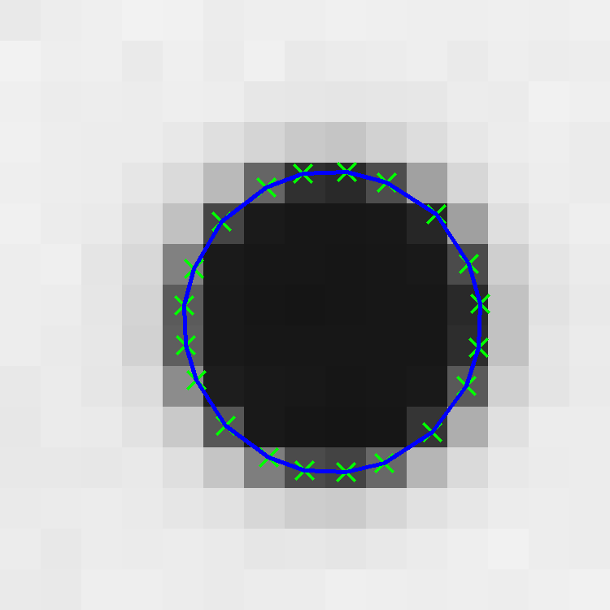
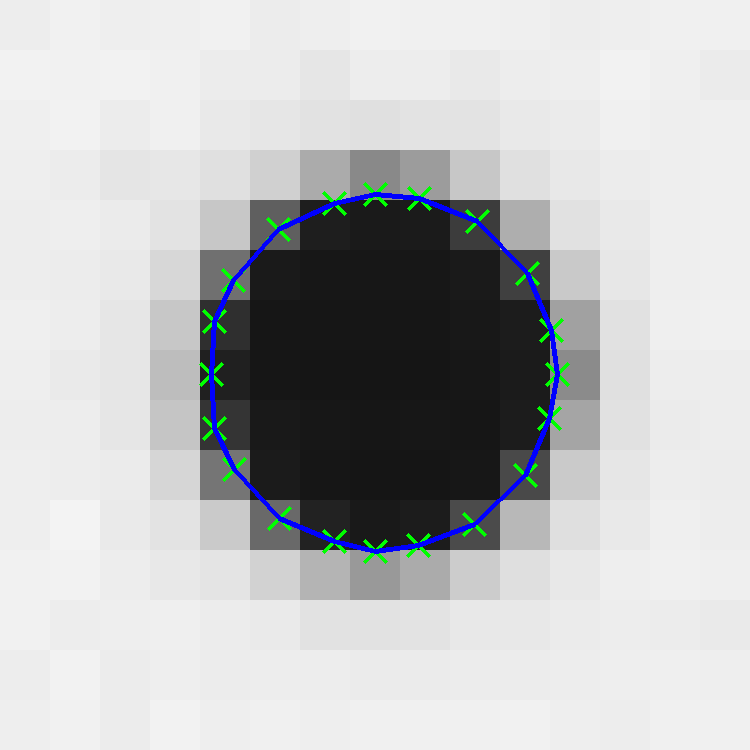
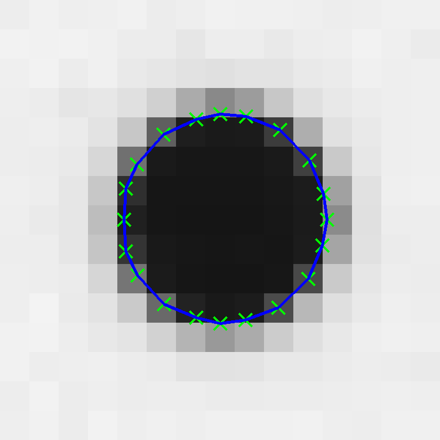
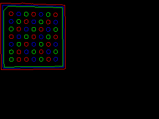
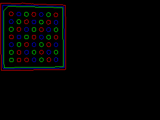
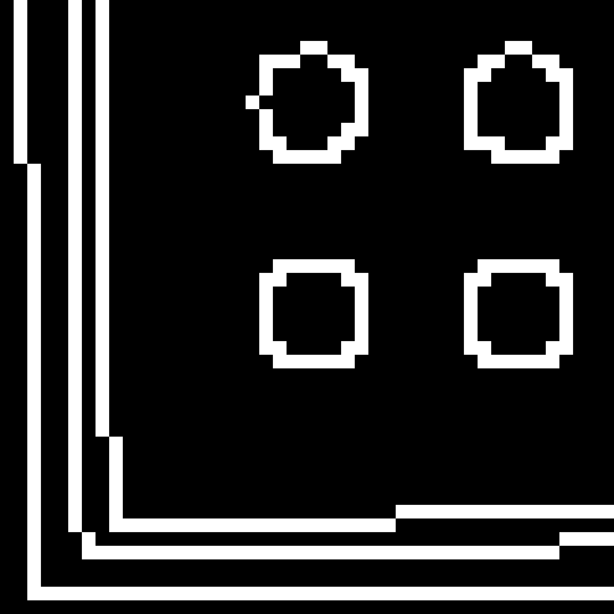
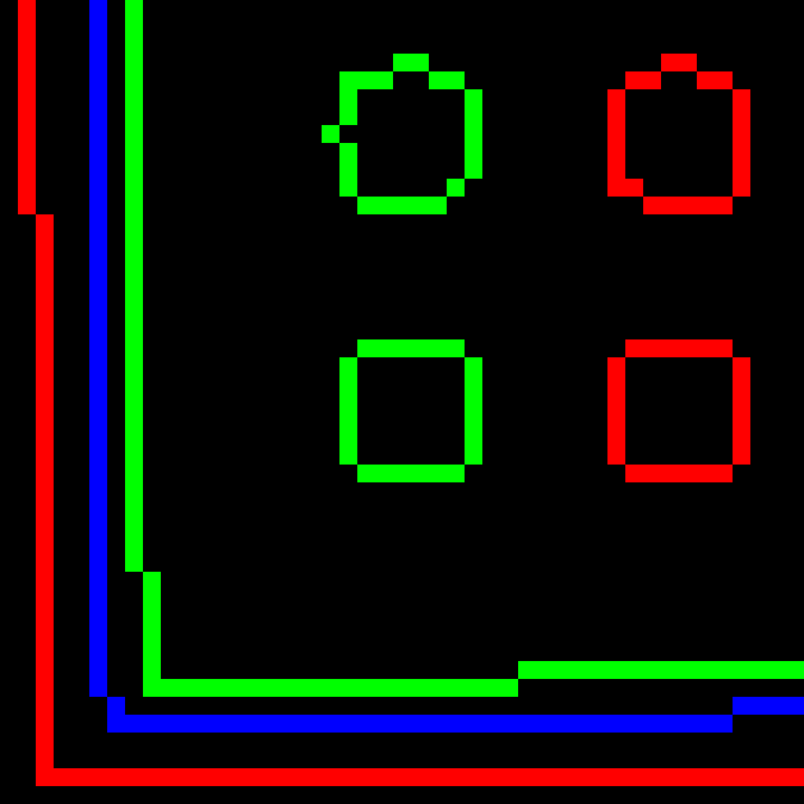
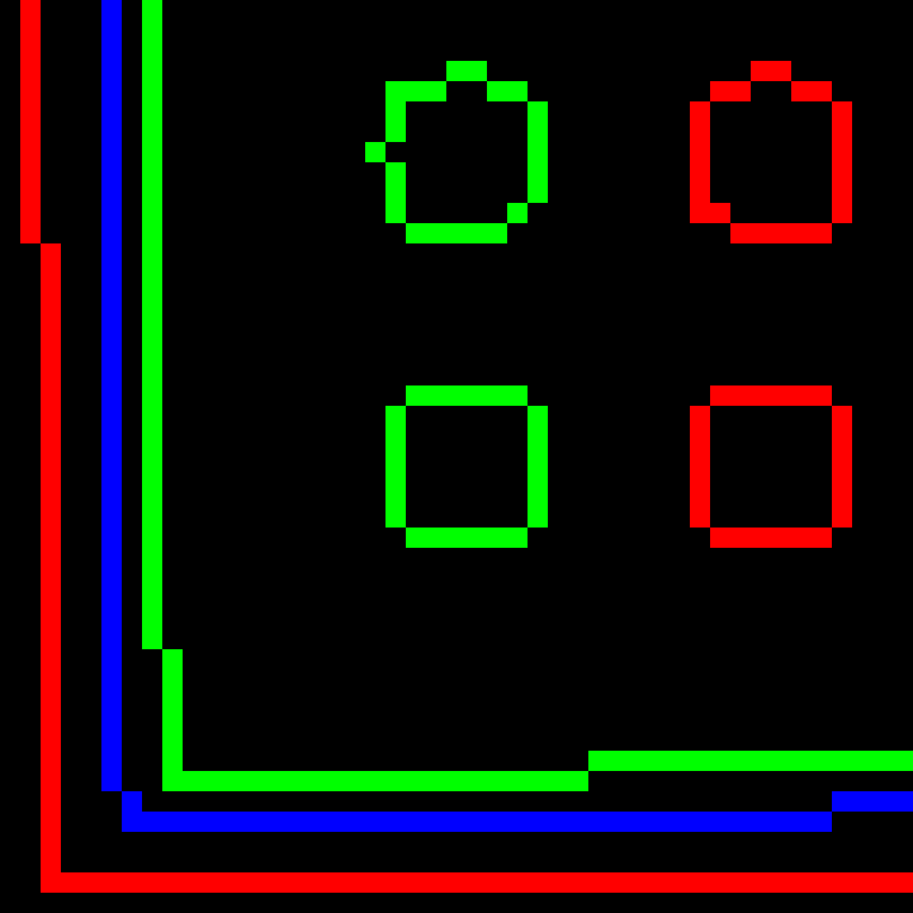
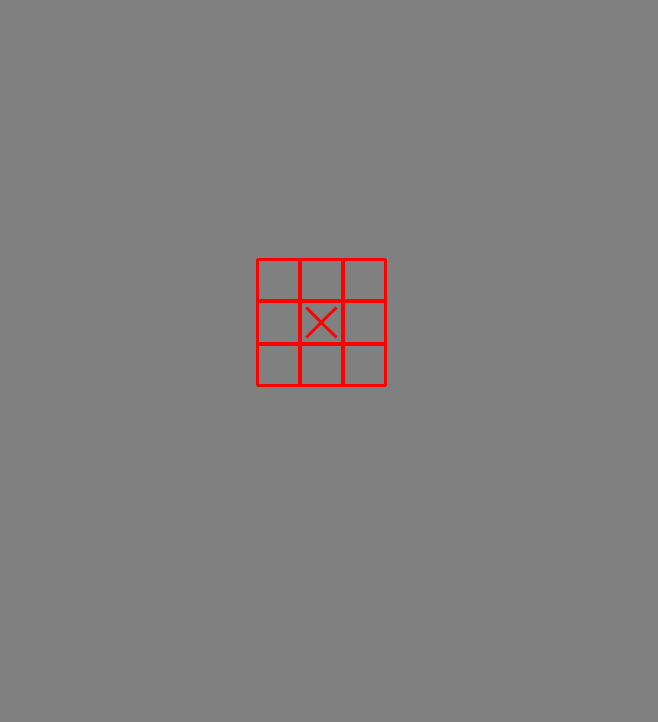

Subpixel Edge Extraction with OpenCV
Overview
OpenCV built in functionalities does not contain subpixel edge extraction methods. This repo demostrates how to implement one.
Some pixel precise edges extracted using the built-in cv::canny and cv::findContours operators are as illustrated below:
The subpixel edge extraction implementation in this repo is based on the following two papers:
- C. Steger, "An unbiased detector of curvilinear structures", IEEE Transactions on Pattern Analysis and Machine Intelligence, 20(2): pp. 113-125, (1998)
- H. Farid and E. Simoncelli, "Differentiation of Discrete Multi-Dimensional Signals" IEEE Trans. Image Processing. 13(4): pp. 496-508 (2004)
Output results:

 

Dependencies
| Version | |
|---|---|
| cmake | 3.21 |
| OpenCV | 4.5.1 |
| Eigen | 3.4 |
| libtbb-dev | 2020.1-2 |
| Boost | 1.78.0 |
| fmt | 8.1.1 |
How to run
$ git clone https://github.com/raymondngiam/subpixel-edge-contour-in-opencv.git $ cd subpixel-edge-contour-in-opencv $ mkdir build && cd build $ cmake .. $ make $ ./main
Code Walkthrough
Pixel-precise edge contour extraction
A typical workflow for edge detection in OpenCV starts with the cv::Canny operator.
The outcome of the cv::Canny operator is a binary edge image with non-maximum suppression algorithm applied. Thus, the edges are typically thinned to a single pixel width, where the edge magnitude response is maximum.
Line 51-58 in main.cpp:
cv::Mat image; image = cv::imread(fmt::format("{}/{}",image_path,filename), cv::IMREAD_COLOR); cv::Mat image_gray; cv::cvtColor(image,image_gray,cv::COLOR_BGR2GRAY); fmt::print("{},{}\n",image.rows,image.cols); cv::Mat edgeIm = cv::Mat::zeros(image.rows,image.cols,CV_8UC1); cv::Canny(image_gray,edgeIm,180,200);


Subsequently, we will apply cv::findContours operator to the binary edge image, in order to obtain a list of boundary-traced contours.
There is a slight complication when using the cv::findContours operator out-of-the-box with a non-maximum suppressed binary edge image. Any closed contour will return not one, but two outputs (one traced from the exterior, another traced from the interior, or hole).
Thus, we implement a custom method, GetEdgeContourValidIndices which takes in the hierarchy output from the cv::findContours operator (running in RETR_CCOMP mode), to filter the closed contours traced from the exterior.
Line 61-66 in main.cpp:
std::vector<std::vector<cv::Point>> contours; std::vector<cv::Vec4i> hierarchy; cv::findContours(edgeIm,contours,hierarchy,cv::RETR_CCOMP,cv::CHAIN_APPROX_NONE); std::vector<int> validIndices; std::vector<int> excludeIndices; GetEdgeContourValidIndices(hierarchy, validIndices, excludeIndices);
The outcome of the GetEdgeContourValidIndices method is as visualized below:
 


 

Center: Interiorly traced closed contours.
Right: Exteriorly traced closed contours.
From visual inspection, we noticed that the interiorly traced closed contours are the more accuracte, and concise representation of the original binary edges.
The implementation of the GetEdgeContourValidIndices method (line 217-241 in main.cpp) is actually pretty straightforward, as below:
// For non maximum surpressed edge images, contour lines are single pixel in width. // For closed contours, there are two possible outcomes from the boundary tracing algorithm, // namely inner (hole), or external (non-hole) contour. // OpenCV `findContours` with `RETR_CCOMP` option returns hierarchy list that starts with an external contour. // Iterate through all external contours in the hierarchy list by following the `NEXT_SAME` indices; // if the current external contour does have a child, this indicates that it is a false positive that // corresponds to another inner hole contour in the set. Thus, we add it into the `excludeIndices` list. void GetEdgeContourValidIndices(const std::vector<cv::Vec4i> &hierarchy, std::vector<int> &validIndices, std::vector<int> &excludeIndices) { const int NEXT_SAME = 0; const int PREV_SAME = 1; const int FIRST_CHILD = 2; const int PARENT = 3; int index=0; while (index != -1){ if (hierarchy[index][NEXT_CHILD]!=-1){ excludeIndices.emplace_back(index); } index = hierarchy[index][NEXT_SAME]; } std::vector<int> l(hierarchy.size()); std::iota(l.begin(),l.end(),0); std::set<int> setFullIndices(l.begin(),l.end()); std::set_difference(setFullIndices.begin(), setFullIndices.end(), excludeIndices.begin(), excludeIndices.end(), std::back_inserter(validIndices) ); }
After we have acquired the pixel-precise contour coordinates, we can move into the subpixel-precise edge point extraction.
Subpixel-precise edge contour extraction
The subpixel edge extraction function, SubPixelEdgeContour takes in the gray image, and a vector of pixel precise contours.
It then returns a vector of subpixel precise contours of double precision.
void SubPixelEdgeContour(const cv::Mat &image_gray, const std::vector<std::vector<cv::Point>> &filteredCont, std::vector<std::shared_ptr<std::vector<std::shared_ptr<cv::Point2d>>>> &contSubPixFull);
Line 246-267 in SubPixelEdgeContour, main.cpp.
// 7-tap interpolant and 1st and 2nd derivative coefficients according to // H. Farid and E. Simoncelli, "Differentiation of Discrete Multi-Dimensional Signals" // IEEE Trans. Image Processing. 13(4): pp. 496-508 (2004) std::vector<double> p_vec{0.004711, 0.069321, 0.245410, 0.361117, 0.245410, 0.069321, 0.004711}; std::vector<double> d1_vec{-0.018708, -0.125376, -0.193091, 0.000000, 0.193091, 0.125376, 0.018708}; std::vector<double> d2_vec{0.055336, 0.137778, -0.056554, -0.273118, -0.056554, 0.137778, 0.055336}; auto p = cv::Mat_<double>(p_vec); auto d1 = cv::Mat_<double>(d1_vec); auto d2 = cv::Mat_<double>(d2_vec); cv::Mat dx, dy, grad; cv::sepFilter2D(image_gray,dy,CV_64F,p,d1); cv::sepFilter2D(image_gray,dx,CV_64F,d1,p); cv::pow(dy.mul(dy,1.0) + dx.mul(dx,1.0),0.5,grad); cv::Mat gy, gx, gyy, gxx, gxy; cv::sepFilter2D(grad,gy,CV_64F,p,d1); cv::sepFilter2D(grad,gx,CV_64F,d1,p); cv::sepFilter2D(grad,gyy,CV_64F,p,d2); cv::sepFilter2D(grad,gxx,CV_64F,d2,p); cv::sepFilter2D(grad,gxy,CV_64F,d1,d1);
From the input gray image, its gradient amplitude image, grad is computed; and subsequently, the first and second order derivatives of the grad image are also computed.
Lastly, let's drill down to the core implementation details in the function SubPixelFacet (line 301-328 in main.cpp) as shown below:
// Subpixel edge extraction method according to // C. Steger, "An unbiased detector of curvilinear structures", // IEEE Transactions on Pattern Analysis and Machine Intelligence, // 20(2): pp. 113-125, (1998) std::shared_ptr<cv::Point2d> SubPixelFacet(const cv::Point& p, cv::Mat& gyMat, cv::Mat& gxMat, cv::Mat& gyyMat, cv::Mat& gxxMat, cv::Mat& gxyMat){ auto row = p.y; auto col = p.x; auto gy = gyMat.at<double>(row,col); auto gx = gxMat.at<double>(row,col); auto gyy = gyyMat.at<double>(row,col); auto gxx = gxxMat.at<double>(row,col); auto gxy = gxyMat.at<double>(row,col); Eigen::Matrix<double,2,2>hessian; hessian << gyy,gxy,gxy,gxx; Eigen::JacobiSVD<Eigen::MatrixXd> svd(hessian, Eigen::ComputeFullV); auto v = svd.matrixV(); // first column vector of v, corresponding to largest eigen value // is the direction perpendicular to the line auto ny = v(0,0); auto nx = v(1,0); auto t=-(gx*nx + gy*ny)/(gxx*nx*nx + 2*gxy*nx*ny + gyy*ny*ny); auto px=t*nx; auto py=t*ny; return std::make_shared<cv::Point2d>(col+px,row+py); }
Let be the function value at point of the image where the Taylor series approximation took place; be the locally estimated first and second order derivatives at the point, that are obtained by convolution with derivative filters. Then the Taylor polynomial is given by
Curvilinear structures in 2D can be modeled as 1D line profile in the direction perpendicular to the line. Let this
direction be a unit vector .
With the current pixel center as origin, any point along the direction perpendicular to the line, can be then defined as , where .
Reframing the function to be parameterized by alone.
We are interested to determine the value of whereby the function is stationary.
Taking the derivative of with respect to ,
Setting ,
The subpixel edge point where the gradient amplitude is maximum is thus given by,
Visual explanation on determining the direction perpendicular to the line


Right: Highlighted with red arrow is the direction perpendicular to the line.




Center: Second order derivative image along y direction, gyy.
Right: Second order derivative image along xy direction, gxy.
The Hessian matrix, is defined as:
Computing SVD of the Hessian:
First column vector of corresponds to the maximum eigen value, which is equal to the direction perpendicular to the line.

One way to think about this is that for a horizontal line, the y axis second order derivative filter will have a maximum response, vice versa. Thus, principal axis with largest eigen value will be the one perpendicular to the line.
References
- C. Steger, "An unbiased detector of curvilinear structures", IEEE Transactions on Pattern Analysis and Machine Intelligence, 20(2): pp. 113-125, (1998)
- H. Farid and E. Simoncelli, "Differentiation of Discrete Multi-Dimensional Signals" IEEE Trans. Image Processing. 13(4): pp. 496-508 (2004)